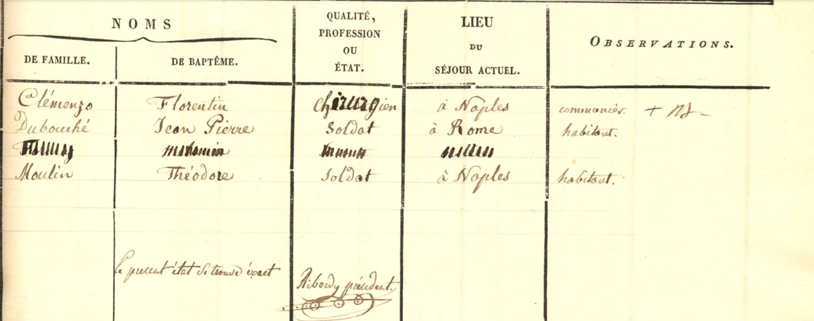
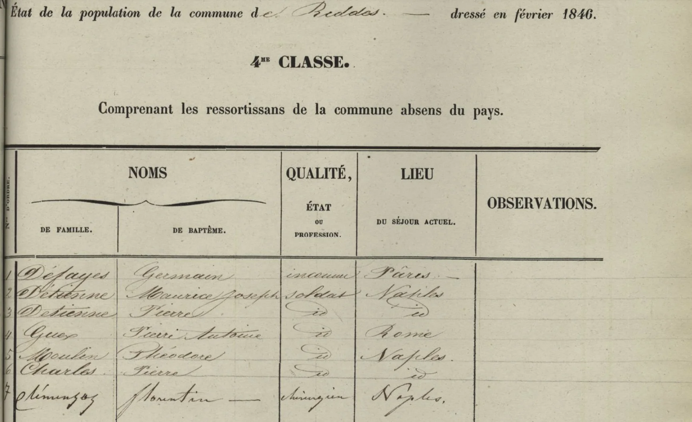

La historia
Joseph Florentin es el hijo mayor de Jean Joseph Clemenzo y Marie Catherine Cerisier, nacido en Ardon en 1805, y el de trayectoria más inusual de toda la generación: mientras sus hermanos se quedaban en el valle o cruzaban el Atlántico, él hizo carrera universitaria y terminó ejerciendo de cirujano en el sur de Italia.
Los dos censos de ~1829 lo muestran ya fuera del Valais como estudiante: el de Riddes (2ème classe, línea 23) le anota domicilio en Viena (Austria); el de Ardon (1re classe) lo da «à Fribourg en Brisgau». Las dos plazas son compatibles con un itinerario de estudios de medicina de la época — ambas tenían facultades de renombre.
En la lista de ausentes de 1837 comparte página con soldados valesanos destinados «à Naples» y «à Rome» — Nápoles mantenía regimientos suizos bajo capitulación. No es un dato menor: explica por qué un cirujano valesano podía tener clientela y colocación allí.
¿Sirvió como cirujano de (o junto a) los regimientos suizos de Nápoles, disueltos en 1859? La coincidencia con los soldados de su misma lista lo sugiere, pero ningún documento lo dice explícitamente.
Después de 1846 se esfuma: no está en el hogar materno del censo de Riddes de 1850, y no aparece entre los beneficiarios de la liquidación de 1905. ¿Murió en Italia? ¿Volvió al Valais? No hay rastro documental posterior.
Cronología
| Año | Fuente | Qué dice |
|---|---|---|
| 1805 | árbol/censos | Nace en Ardon, Valais |
| 1829 | Censo Riddes 2ème classe, l.23 | «Joseph Florentin», étudiant, domicilio en Vienne (Autriche) |
| s/f (¿1829?) | Censo Ardon 1re classe | Étudiant, «à Fribourg en Brisgau» |
| 1837 | Censo Riddes 4me classe (ausentes) | «Clémenzo Florentin», chirurgien, à Naples; obs. «communier» (conserva burguesía en Riddes) |
| 1846 | Censo Riddes 4me classe, l.7 (feb. 1846) | «Climenzoz Florentin», chirurgien, Naples — entre los «ressortissans de la commune absens du pays» |
| 1850 | Censo Riddes (hogar de Marie Catherine Cerisier) | No figura en el hogar materno — sigue fuera del país |
Qué falta / hipótesis
La hipótesis más económica: estudió medicina entre Friburgo de Brisgovia y Viena hacia 1825–1835 y se colocó como cirujano en Nápoles, plaza natural para un valesano por los regimientos suizos al servicio del rey de las Dos Sicilias. Su desaparición documental después de 1846 deja dos escenarios: murió en Italia (lo más probable, dado que tampoco figura en la liquidación de 1905), o regresó y murió en el Valais sin dejar huella en los censos conservados.
Líneas de investigación
- Buscar matrícula en registros universitarios de Friburgo de Brisgovia y de Viena (~1825-1835)
- Buscar en registros napolitanos: matrículas de cirujanos/médicos del reino de las Dos Sicilias, archivos de los regimientos suizos de Nápoles (disueltos 1859)
- Verificar registros de defunción de Riddes y Ardon post-1846, por si regresó
- Rastrear si aparece en los censos de ausentes de Riddes posteriores (1850s) o si la serie se corta
Fuentes
- Censo de Riddes 1829 — 2ème classe, l.23 (étudiant, Vienne)
- Censo de Ardon ~1829 — 1re classe (étudiant, à Fribourg en Brisgau)
- Censo de Riddes 1837 — 4me classe, ausentes (chirurgien à Naples, communier)
- Censo de Riddes 1846 — 4me classe, l.7 (chirurgien, Naples)
Documentos


Censos


